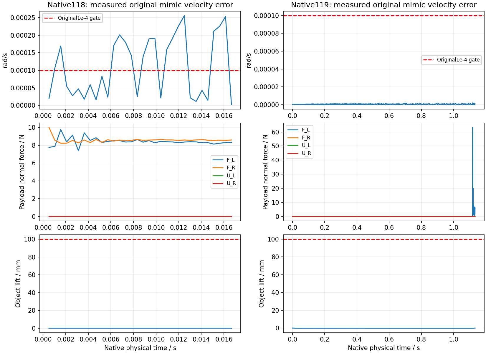

← 主面板多任务操作：从真实接触到完整验收
开发实验 Native118/119 · 单物体双手协同搬运 · 实验配置2FR3/F2＋2UR5/DFX。研究状态保留失败；尚无完整安全任务、学习System0或独立留出测试。
任务完成数仍为0。控制器、几何规划和录像均不能替代真实抓取、100毫米抬升保持2秒、200毫米搬运、支撑放置、实际释放及撤离。模拟窗口结束与真实机器人安全制动分别判断。
3＋23类单物体角色控制；2种多物体调度组合。多物体原生观测适配尚未绑定。
2同一开发场景的两个原生任务试验；不是两个独立场景或留出样本。
0完整安全操作任务；合格训练任务数据0。
2 / 8八方向离散几何路线准入；源模型结果，不是物理成功率。
已实现的操作与边界
单手抓放、双手共同抬举、四手共同抬举共用按原生接触反馈推进的六阶段控制器。两组双手搬运、四手分别抓放通过多物体调度组合表达，检查物体身份和手臂占用冲突；当前原生任务执行适配仅绑定双手梁体。其余任务仍需各自物体场景、观测和完成条件。
任务目标、物体位姿、速度、尺寸、质量、接触法向、真实手形和角色进入控制输入。50电机意图经过真实FIFO6与实际74关节几何检查。没有运行时物体位姿写入、关节状态投影或手—物固定连接。
原生结果与失败
Native118从原有接触状态初始化；Native119仅在初始化时把下方两手抬高60毫米，保留全部手指、速度、对象、动力学和控制器。这是两个启动／接近开发窗口，不能作为完整任务成功率或两个独立场景的统计样本。
Native118：原始手指联动速度门槛失败。Native119：下方两臂实际关节运动约0.077rad，上方两臂保持；在1.11875秒，左手食指与梁顶部接触力由前一步2.89N跃升至63.29N，超过30N；这次联动q、qd本身通过原门槛。物体未被抬起。两种失败分别保留。
下载原始矢量图
接触安全策略候选：尚未原生验证
失败前实际手臂尚距抓取端点0.089／0.110rad，控制器已经推进手指加压。新增V2候选等待真实关节到位、速度及已提交端点连续稳定0.3秒，再推进压力；接近目标速率降至0.02rad/s，手指压力目标速率0.005rad/s。5项软件契约通过，原生验证0次。
12N只能触发停止意图；本样本在一个物理步内由2.89N跳至63.29N，因此反应阈值不能证明瞬时力安全。停止意图仍需在实际执行层绕过延迟FIFO并验证制动。下一步还需重新规划手—物插入路径、接触前速度与冲量预算；不把降速、停止指令或单个失败解释当成安全证明。
四视角原生短窗
下列录像来自Native119的俯视、正视、侧视和总览相机。只展示实际记录的启动／接近窗口，不计作已完成的抓取抬举。视频时间逐帧与物理时间核对。
top · 18个原生帧 · 最后物理时刻1.133333sfront · 18个原生帧 · 最后物理时刻1.133333sside · 18个原生帧 · 最后物理时刻1.133333soverview · 18个原生帧 · 最后物理时刻1.133333s
可达性与路线筛选
目标平移220毫米；八个方向在原始关节范围、固定末端姿态和全部9021几何对下检查。每条路线404个源模型状态。保留所有拒绝路线；选择预定角度顺序中第一个通过者。静态手形和离散采样不能证明连续带载碰撞安全。
修正的测量与连续记录
旧接触判断把长梁两端的同侧纵向坐标误当成“没有对向夹持”。原始Native105重算后，下方左右两手的对向接触分别持续6.578秒和3.464秒，上方两手仍为0。对向接触不是摩擦力闭合证明，原始完整任务失败保留。
宿主记录容量8192→65536，不改原生求解和16次额外迭代。14项CPU边界检查通过；Native117的832个物理步、6122个分块数组字段与原始115逐字节一致，旧联动失败保留。容量对应34.133秒的当前物理时钟；尚未通过长时任意运动验收，30／120／600秒随机实测均未因此获得成功计数。